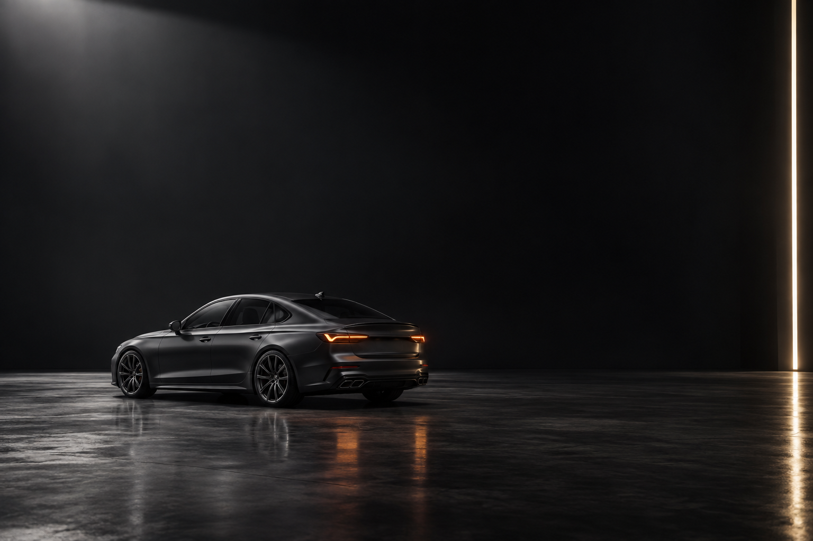
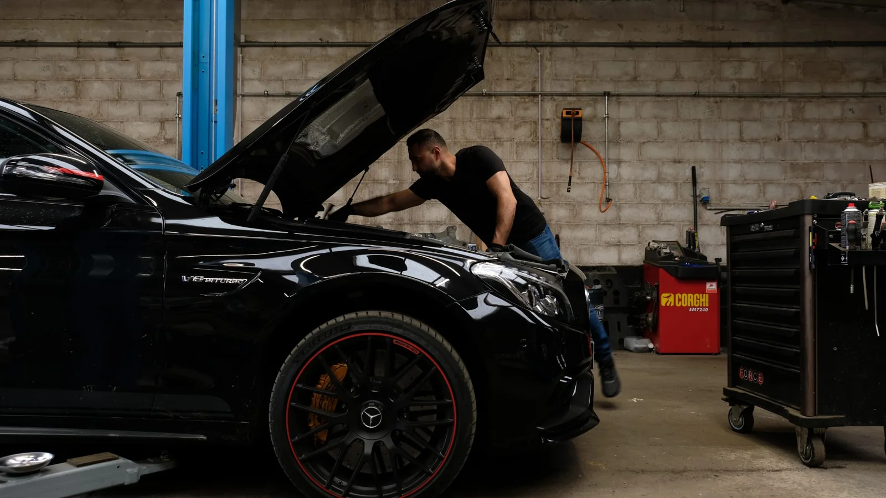
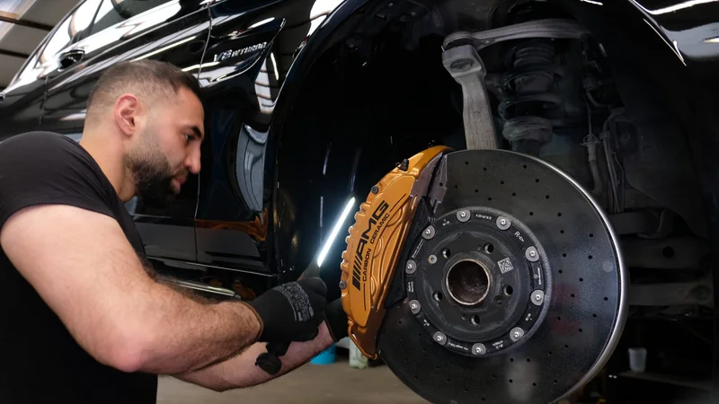

UW GARAGE. UW VOLGENDE AUTO.
GEDREVEN.
VAKMANSCHAP.
TOT IN ELK DETAIL.
Uw garage in Oudenaarde.
Van onderhoud tot uw volgende auto.
PASSIE
TECHNIEK
MENSEN
DIE RIJDEN
TECHNIEK
MENSEN
DIE RIJDEN
SLEEP OM TE DRAAIEN
02 / DE MENS ACHTER DE MACHINE
ECHT WERK.
ECHTE AANDACHT.

A.R. CARS / IN DE WERKPLAATSAANGENAAM. ARTUR.
U spreekt met de man
die aan uw auto werkt.
Een vreemd geluid, een lampje op uw dashboard of tijd voor onderhoud? We kijken samen wat uw auto nodig heeft. Rechtstreeks, persoonlijk en met oog voor detail.
Maak kennis met de garage ↗ARTUR AVANESOVZAAKVOERDER / MECHANIEKER
03 / WAAR MOGEN WE U MEE HELPEN?
UW VOLGENDE
STAP.
01WEER
Ontdek de garage ↗ZORG VOOR UW AUTO
WEER
DE WEG OP.
Onderhoud, diagnose en reparatie.
Alle merken. Eén vertrouwd adres.

02UW VOLGENDE
Bekijk de auto’s ↗RUIMTE VOOR IETS NIEUWS
UW VOLGENDE
HOOFDSTUK.
Ontdek ons autoaanbod.
Wij helpen u persoonlijk verder.
EEN VRAAG? WE HELPEN U GRAAG.
LATEN WEPRATEN.↗